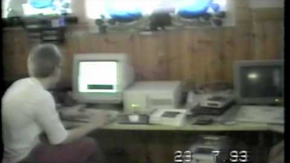

By 1993 almost everybody believed the PC could not do smooth scrolling or real-time 3D. Second Reality did both — a lit spaceship, a plasma, a water raytracer, an 1,801-frame vector animation — locked to the music, out of two files totalling 2.33 MB.

23 July 1993 — finishing the demo at Trug’s parents’ house near Pori, a week before Assembly. Filmed by Tomi Suominen; published by Mika Tuomi.
It debuted at Assembly ’93 on 30 July 1993 and took first. The Finnish games industry, fairly directly, starts here.